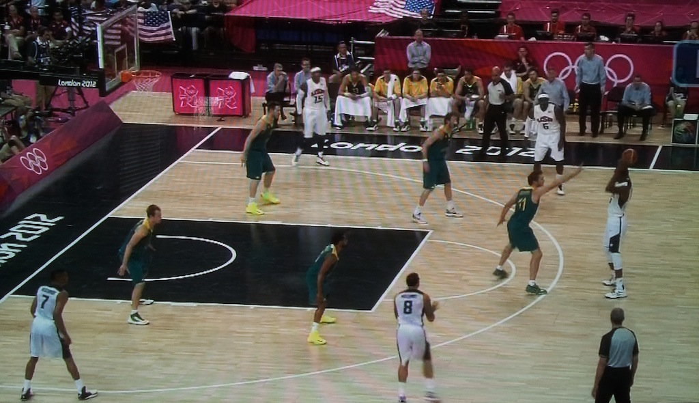
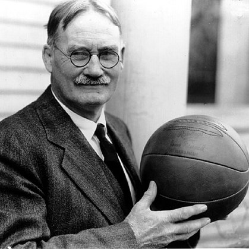
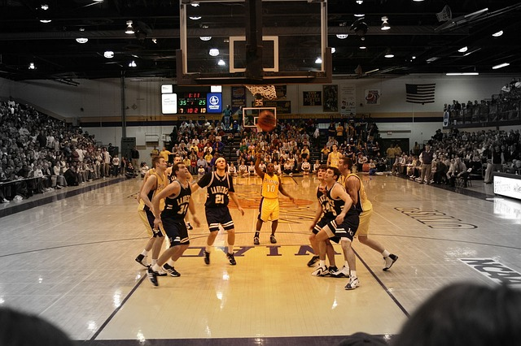
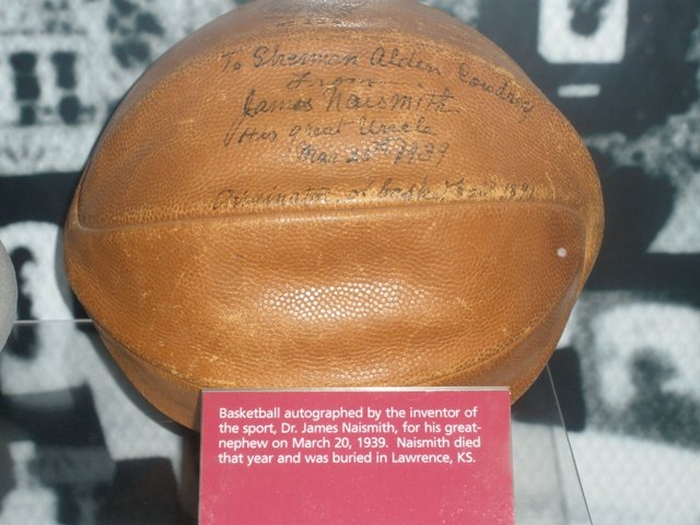

Кошарка је тимски спорт који се игра у две екипе, састављене од пет играча, а поента је убацити што више кошева – односно убацити лопту кроз обруч, поштујући одређена правила игре.
Сви знају како изгледа један кошаркашки меч, а готово да су и правила мање-више свима позната, а у свету спорта – кошаркаши су познати као веома високи, јаки и издржљиви.
Али како је настао овај спорт који је сада, поред фудбала и одбојке, један од најпопуларнијих екипних спортова на свету? Његова историја је заиста занимљива!

Кошаркашки напад 5 на 5
2.Историја кошарке
Kанадски лекар са Универзитета Макгли, Џејмс Нејсмит је почетком децембра 1891. године, када је радио као професор физичког распитања на Колеџу Спрингфилд, осмислио нову игру.
Наиме, ова игра се одвијала на затвореном терену, а циљ је био одржавање кондиције код ученика током зиме – када нису имали могућност да трче напољу и баве се спортом како то раде током топлијег дела године.
Покушавао је од различитих предложених игара да направи одговарајућу, која не би била ни прегруба, а која би била прилагођена ученицима, али у томе никако није успевао.
Након неког времена, професор Џејмс Нејсмит је схватио да би најбоља почетна замисао била да узме правила дечије игре под називом Патка на камену и да од ње, модификујући одређена правила, направи нови спорт којим би могли да се баве и његови ученици са колеџа.
Тада је направио једноставна правила која су одређивала да кош буде на висини од 3,05 метара, а изгледао је другачије него онај који ми данас виђамо – имао је тврдо дно које не пропушта лопту, што је представљало проблем сваки пут када би неки играч дао кош.

Џејмс Нејсмит-оснивач кошарке
Женска кошарка
Женска кошарка почела је 1894. када је Сенда Беренсон, професорка физичког васпитања прилагодила Нејсмитова правила женама.
Прва службена кошаркашка утакмица одржана је 20. јануара 1892. у дворани Гимназије Удружења младих хришћана.
Играло се с девет играча на терену упола краћем него данашњи NBA терен. Оригинални назив кошарке на енглеском је basketball, а сложеница је од речи basket – кош и ball – лопта.
Идеја за назив спорта
Име је Нејсмиту предложио један од његових ученика. Игра је била популарна од самог почетка.
3.Прва кошаркашка утакмица


Званично – прва кошаркашка утакмица се одиграла 20. јануара 1892. године у дворани Гимназије Удружења младих хришћана. На терену, који је био упола мањи од оног на ком се данас игра у НБА дворанама, било је девет играча.
Први прави кошаркаши, тренирани за овај спорт, били су управо студенти Гимназије Удружења младих хришћана, да би се касније ова игра проширила на целу територију Канаде и САД-а.
У почетку, кошарка се играла лоптом за фудбал, али су убрзо почеле да се производе лопте које су направљене баш за овај спорт, а које су – све до 50-тих година 20. века – биле смеђе боје. Тада је Пол Тони Хинкл увео наранџасту као најбољу боју за кошаркашку лопту – како би она била што уочљивија.
На Олимпијским играма кошарка се први пут играла 1936. године. а четири године раније основана је ФИБА – Међународна кошаркашка федерација која је одређивала правила овог спорта на светском нивоу.